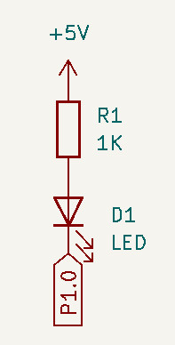
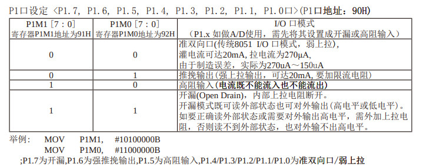
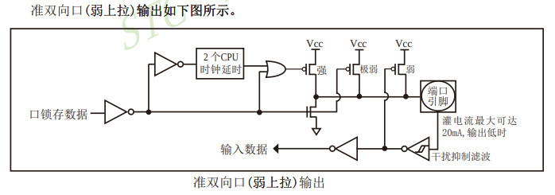
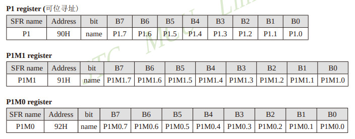
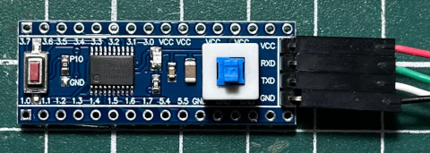
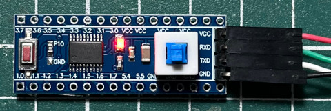

Steward
分享是一種喜悅、更是一種幸福
微處理器 - STCmicro STC15W408AS - C/C++ - LED
LED是連接到P1.0

I/O預設是弱上拉


P1

main.c
#include <mcs51/8051.h>
#define LED P1_0
void delay(unsigned long ms)
{
while (ms--);
}
void main(void)
{
while (1) {
LED ^= 1;
delay(100000);
}
}
Makefile
all: /usr/bin/sdcc main.c -I. packihx main.ihx > main.hex flash: sudo stcgal -P stc15 -p /dev/ttyUSB0 -l 9600 -b 9600 -t 11059 main.hex clean: rm -rf main.asm main.ihx main.lst main.mem main.rst main.lk main.map main.rel main.sym main.hex
編譯、燒錄
$ make
/usr/bin/sdcc main.c -I.
packihx main.ihx > main.hex
packihx: read 13 lines, wrote 17: OK.
$ make flash
sudo stcgal -P stc15 -p /dev/ttyUSB0 -l 9600 -b 9600 -t 11059 main.hex
Waiting for MCU, please cycle power:
接著上電即可開始燒錄
Target model: Name: STC15W408AS Magic: F51F Code flash: 8.0 KB EEPROM flash: 5.0 KB Target frequency: 11.059 MHz Target BSL version: 7.2.5T Target wakeup frequency: 36.525 KHz Target options: reset_pin_enabled=False clock_source=internal clock_gain=high watchdog_por_enabled=False watchdog_stop_idle=True watchdog_prescale=256 low_voltage_reset=True low_voltage_threshold=3 eeprom_lvd_inhibit=True eeprom_erase_enabled=False bsl_pindetect_enabled=False por_reset_delay=long rstout_por_state=high uart2_passthrough=False uart2_pin_mode=normal cpu_core_voltage=unknown Loading flash: 151 bytes (Intel HEX) Trimming frequency: 11.083 MHz Switching to 9600 baud: done Erasing flash: done Writing flash: 576 Bytes [00:00, 728.74 Bytes/s] Finishing write: done Setting options: done Target UID: F51FC40F178A45 Disconnected!
完成

